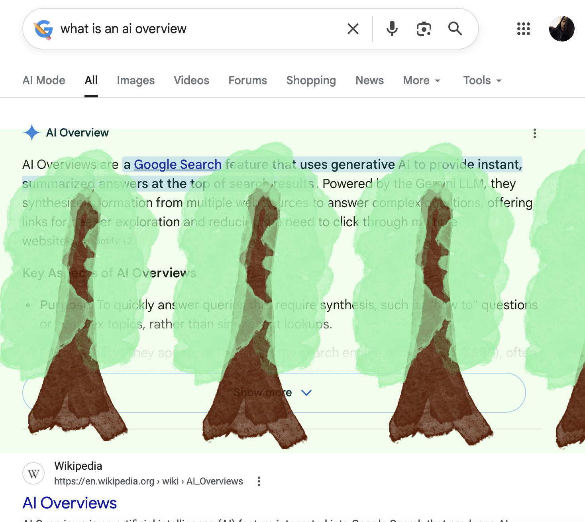

01 / VISIBILITY
Environmental Cost
AI-generated answers require computation and energy, yet these resource demands remain largely out of sight. The trees act as a metaphor, not a measure of actual energy consumption.
Critical Browser Intervention / Chrome Extension / 2026
A Chrome extension that overlays interactive trees on Google AI Overviews, introducing deliberate friction into an otherwise seamless AI-assisted search experience.

What becomes noticeable when a seamless interface asks us to pause and act?
The extension does not block AI results. It introduces a symbolic interruption that invites reflection on the resources and habits behind automated answers.
Rather than making search more efficient, Unplant Trees uses a small, intentionally inconvenient action to make the interface itself part of the experience.
01 / VISIBILITY
AI-generated answers require computation and energy, yet these resource demands remain largely out of sight. The trees act as a metaphor, not a measure of actual energy consumption.
02 / FRICTION
The extension does not disable AI Overviews. Clicking to cut and remove a tree inserts a deliberate pause into a search experience usually designed to feel immediate.
03 / INQUIRY
When synthesized answers become the first destination, how might our habits of exploring, comparing, and checking sources change? The project raises this question without claiming to have measured that effect.
Implementation — A lightweight Chrome extension using a minimal visual overlay and simple click interactions.
Critical Approach — Exploring how interaction design can encourage more deliberate engagement with AI-mediated information.
The extension runs in Chrome and overlays interactive trees when Google displays an AI Overview.
Prototype demonstration · Watch on YouTube
Working build · Updated November 8, 2026
chrome://extensions.Search Google. If an AI Overview appears, interact with the trees: click once to cut and twice to remove.